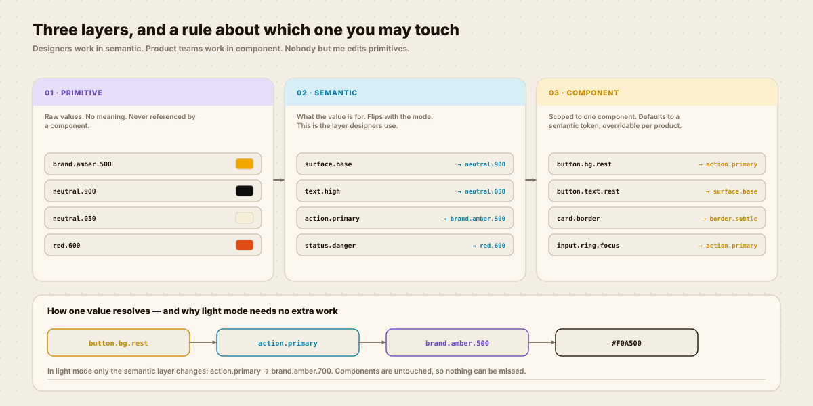
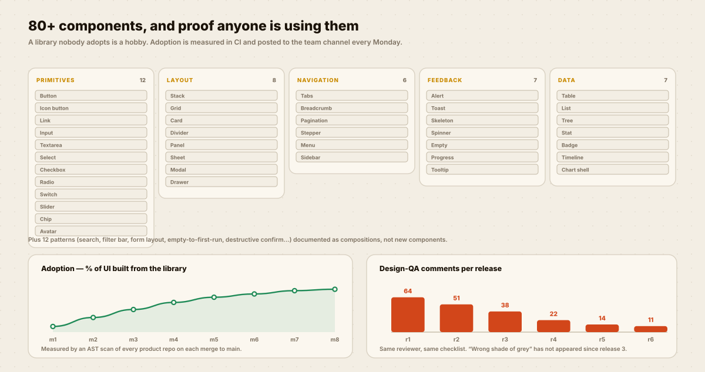

Frontend engineering & DesignOps
FIGMA VARIABLES
TO ANGULAR, ZERO DRIFT.
Four products, 213 hard-coded colours and a brand refresh estimated at six weeks. I built the pipeline and the governance that made the next refresh take two days.

One source of truth, four generated outputs, and six checks that stop it drifting.
TWO HUNDRED AND THIRTEEN SHADES OF NEARLY.
A design system is not a component library. The library was the easy half — the hard half was making sure the value in the code is the value in the file, forever.
What I inherited
213 hard-coded hex values across four Angular apps, 41 of them within 2% of each other.
“Wrong shade of grey” was a recurring ticket type in the QA backlog.
What I set out to make impossible
Typing a hex value into a component should fail the build, not start a conversation in code review.
A designer changing a token in Figma should be able to see it in every product without asking anyone.
HOW IT WAS BUILT.
Click a step. This one is mostly plumbing, and the plumbing is the point.
An AST scan, not a spreadsheet
I wrote a small script that walked every template and stylesheet in all four repos and collected every colour literal with its file and line.
213 of them. That list became the backlog and, later, the regression test.

The check that did the most work
no-raw-colour — an ESLint rule that makes a hex literal in a component an error. It is nine lines of configuration and it did more for consistency than the other five combined.
The check people liked most
token-diff posts a table of every changed token as a comment on the pull request. Reviewers stopped having to imagine what a change would look like.

CHANGE A TOKEN.
This is the whole argument for the architecture, in one widget. Move a slider and watch every component follow — without touching a single component file.
Card component
Nothing in this card knows what colour it
is. It asks for button.bg.rest, which asks for action.primary.
Second instance, same tokens. In the real system this is 80+ components across four products.
THE PIPELINE.
Figma is the source. Everything downstream is generated, and six checks stop it drifting.
There is a live dashboard for this pipeline — token counts, drift, coverage and platform outputs — built as a standalone page. Open the DesignOps dashboard →
DOES ANYONE ACTUALLY USE IT?
The only question worth asking about a design system, and the one most case studies skip.
THE HONEST BIT.
Design systems fail slowly and quietly. Here is where this one is weakest.
What I would do differently
- I built the token layers before talking to the product engineers who would consume them. The component layer was over-engineered for the first three months and I had to delete about a third of it.
- Adoption at 91% sounds finished. The last 9% is one legacy app that will never migrate, and pretending otherwise on a chart is dishonest — it should be excluded and named.
- Documentation is Storybook plus a README. There is no “when should I not use this component” guidance, which is the thing juniors actually need.
- The Figma plugin export is a manual click. It should be a webhook, and until it is, the source of truth is only as fresh as the last person who remembered.
WANT THIS
ON YOUR PRODUCT?
Tell me the one flow that matters most to your business and what it currently costs you. I will come back with what I would research first and what I would ship first.